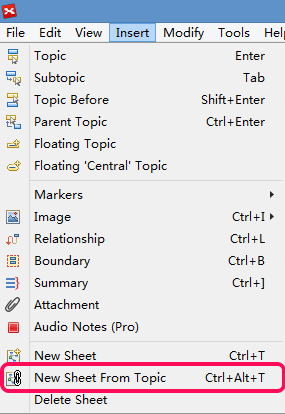

トピックからシートを新規作成
トピックからシートを新規作成は、現在のマップの一部から新しいマインド マップを作成することができます。
- マップAのファイル開き、そのうちトピックの一つを選択します。
- メニューの[挿入]→[トピックからシートを新規作成]をクリックするか、ショートカットキーの "Ctrl + Alt + T" を使用します。
- 作成された新しいマップ B には、選択したトピックとそのサブトピックが含まれています。

注:
- 地図 B の中心トピックは、地図 Aで選択したトピックになります。
- 中心トピックは、選択されたトピックにリンクされます。